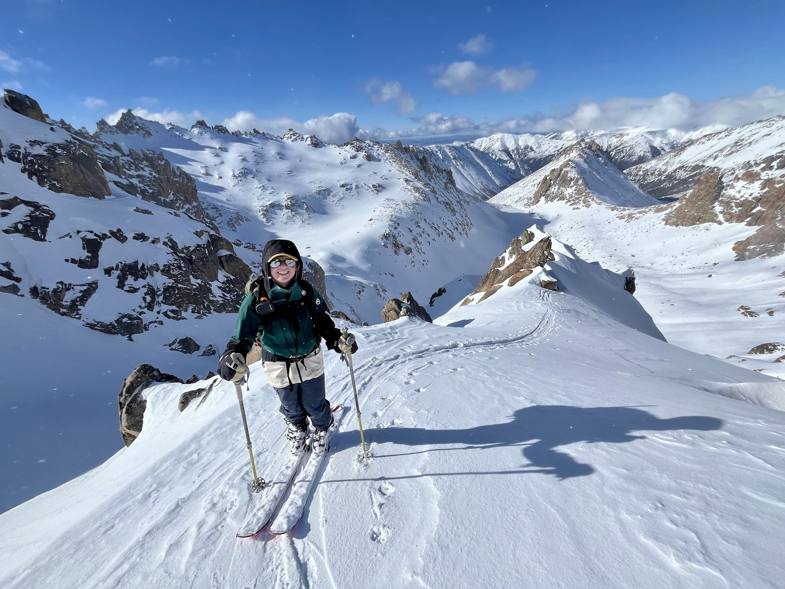
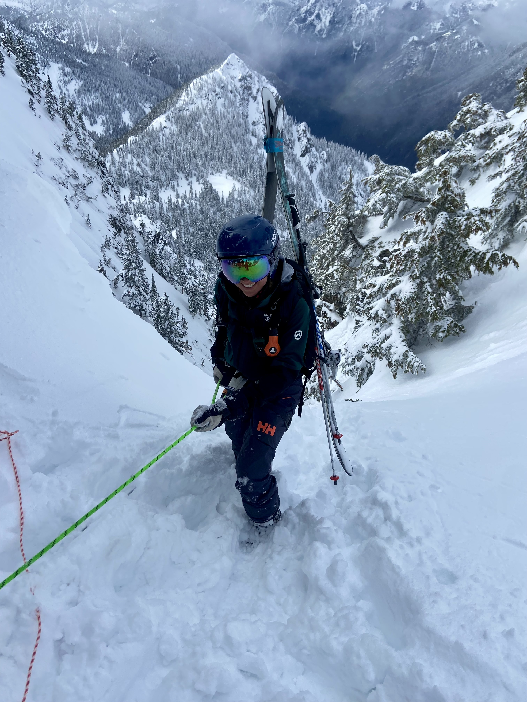
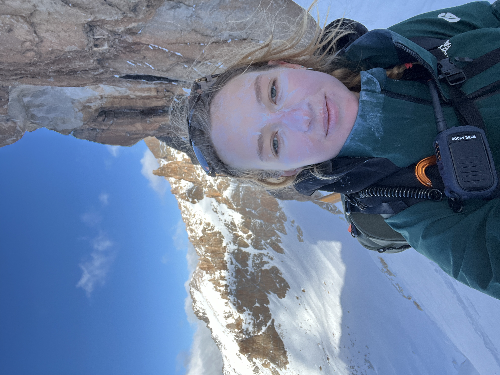
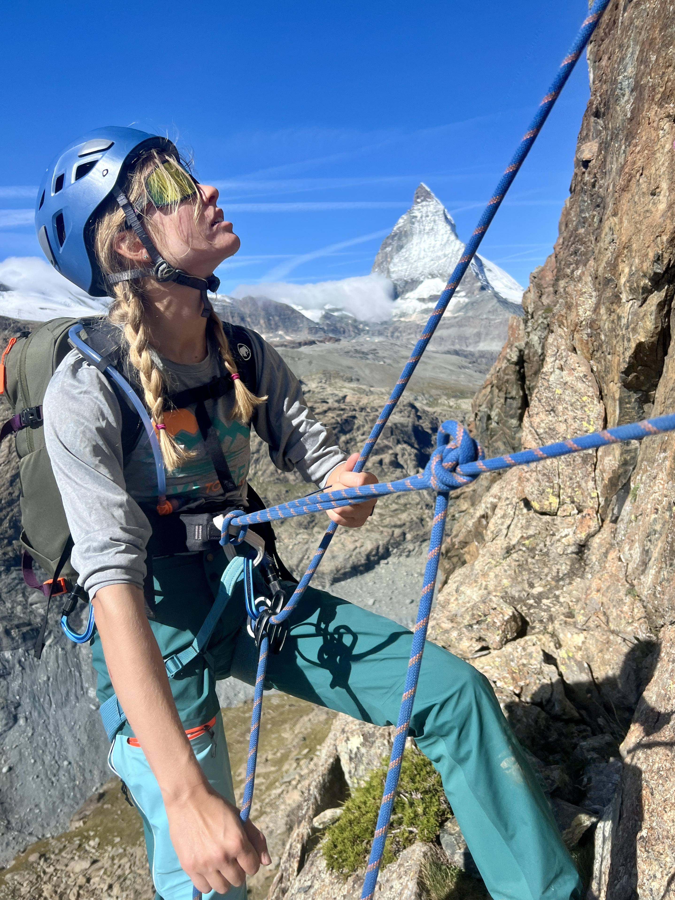
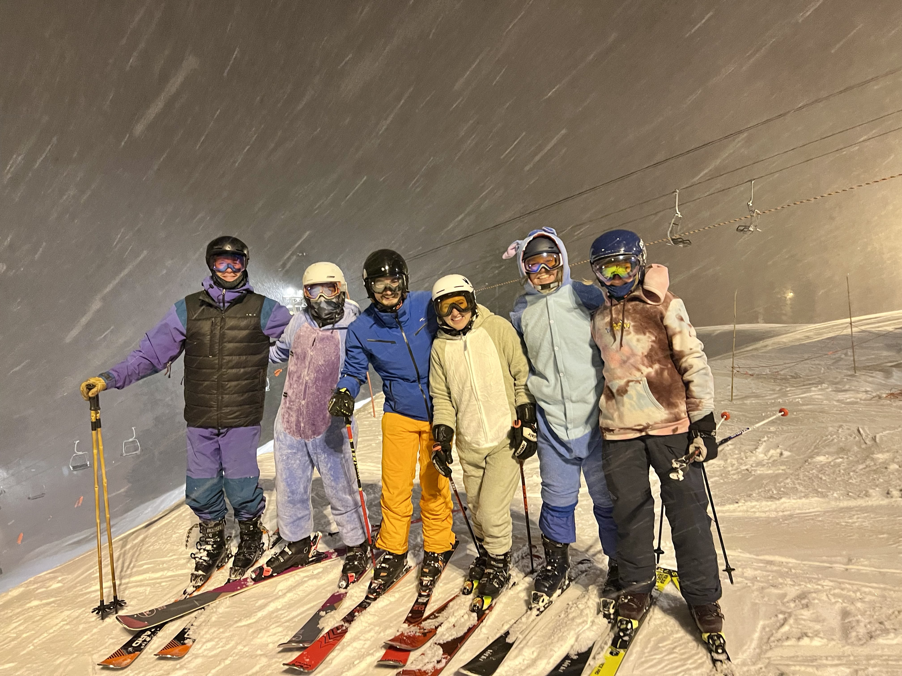

Annika Salmi
Hi! I'm Annika Salmi.
I am currently pursuing a PhD at ETH Zurich across
two departments (Physics and Earth & Planetary Sciences).
I am supervised by Professor Caroline Dorn and Professor Paul Tackley, modeling carbon and sulfur cycles on exoplanets.
I previously completed a Master's in Planetary Science at the
University of Cambridge,
where I received an award for Excellence for my thesis and a Distinction. Before that, I worked as a simulation
engineer at Starfish Space, modeling the physics
of drag. I’m a Yale University graduate in Astronomy and
Physics. I’m also interested in science communication.
My scientific interests are:
- Planetary interiors and atmospheres
- Origins of life
- Planetary system dynamics
- Missions to solar system bodies
Papers & Posters
repos
Articles
Science Writing
New study reveals black holes are spinning like crazy, Yale Daily NewsYale scientists contributed to century-old forest mismanagement policy, Yale Daily News
Finding Venus on the Moon: A Novel Theory, Yale Scientific Magazines
Owls of the Eastern Ice by Jonathan Slaght: A Compelling Tale of Conservation and International Friendship, Yale Scientific Magazine
A NASA engineer on the Mars rover, women in science, and why mentors matter, Matador Network
An Antarctic Year
Summit Fever
High Tide
What Happens When Your Period Makes You Suicidal
Other
4 Science Fiction Novels That Explore Life On Venus, Study BreaksWhy Are Movies About Queer Women Always Period Pieces?, Study Breaks
Joji’s New Album ‘Nectar’ Hypnotizes, But It Lacks Depth, Study Breaks
On His Debut Album, ‘Apolonio,’ Omar Apollo Explores Love And Belonging, Study Breaks
Fun stuff
Ski mountaineering



Climbing

(previously) Captain of local ski team YFAST in Seattle, Washington

Books read so far in 2025: Goodreads
Previous books read per year:
2024: 100
2023: 66
2022: 51
2021: 61
2020: 100
2019: 80
2018: 50
2017: 90
2016: 54
2015: 79